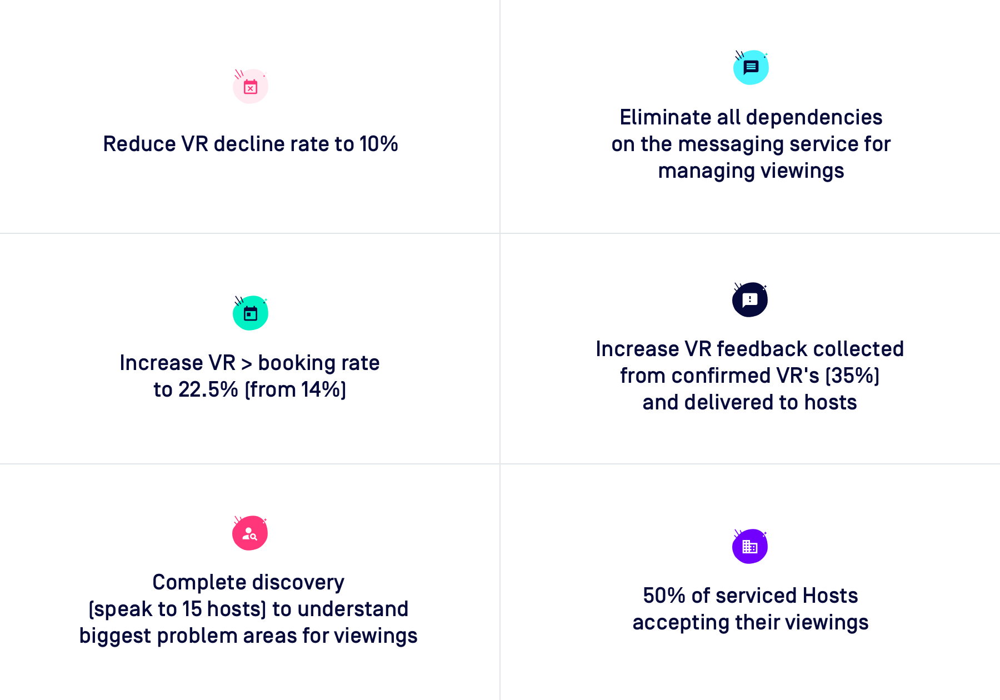
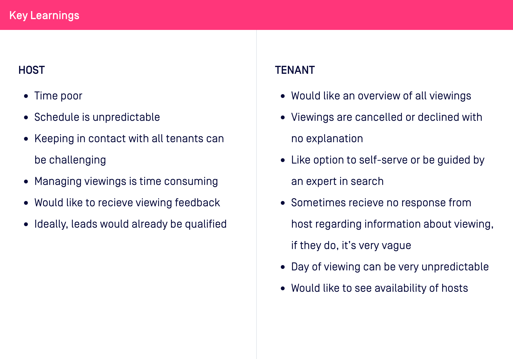
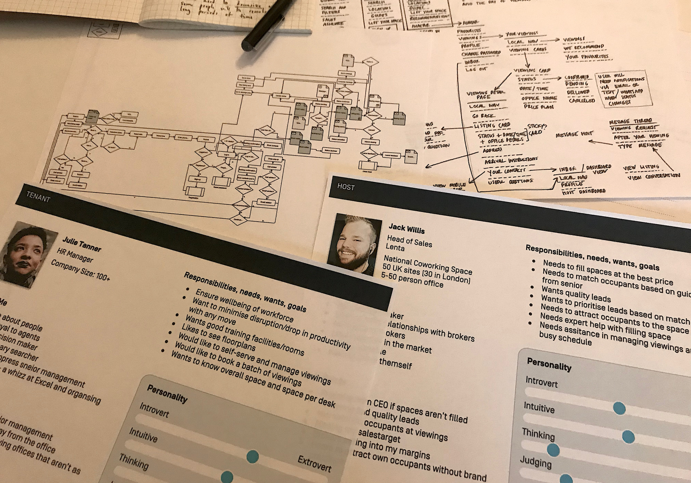
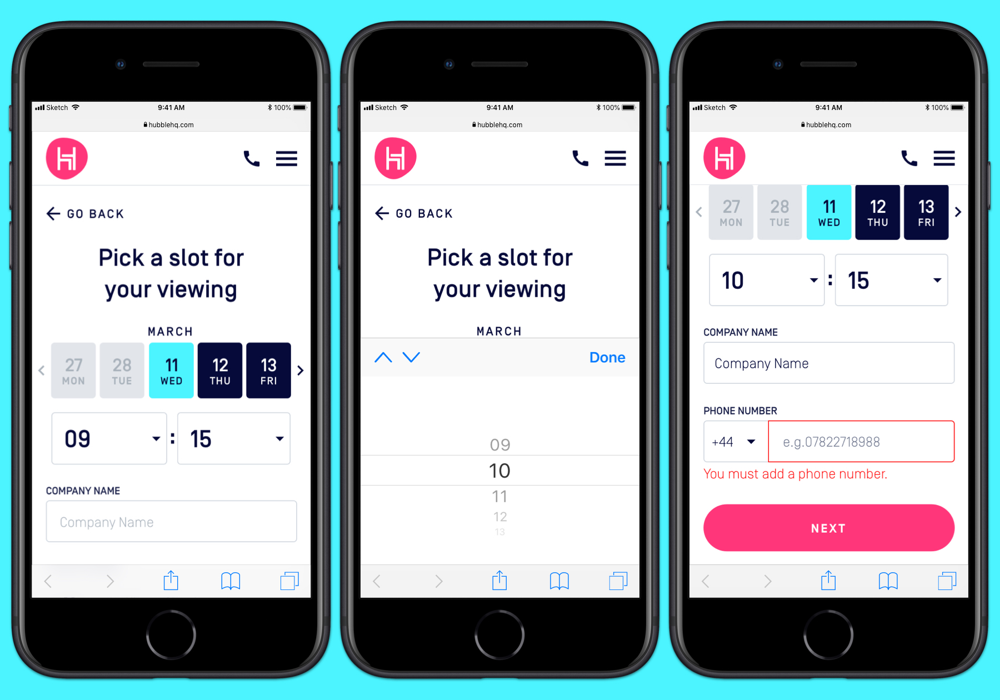
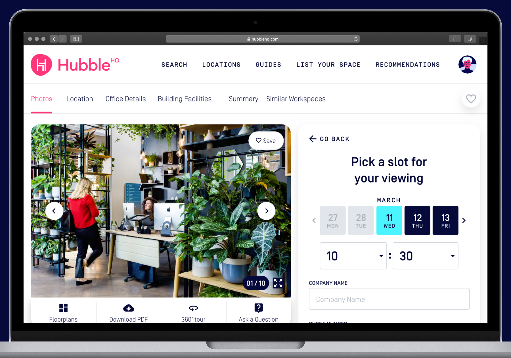
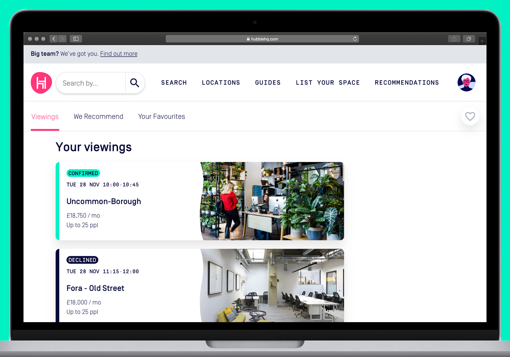

Fixing a 30% host decline rate: viewings redesign under a business pivot
Designing around the constraint you can't remove.
Product Designer · HubbleHQ · 2019–2020
Designing around the constraint you can't remove.
Product Designer · HubbleHQ · 2019–2020
HubbleHQ is an office search and flexible workspace marketplace. Businesses use it to find and book office space, from monthly flex desks to long-term private offices. The platform connects workspace seekers with hosts, and a large part of that process involves physical viewings before any commitment is made.
The viewings flow had a structural problem that no amount of design could remove: hosts controlled their own calendars, and many were slow to respond or unavailable at the times they had listed. A third of viewing requests were being declined by hosts, and there was no way for the product to prevent that. We could only design around it.
I joined as the lead product designer, working with a product manager, engineering team and, for part of the project, a second designer focused on the host-side experience.

Before designing anything, I needed to understand why the decline rate was so high and where the biggest drop-off points were. I ran a series of interviews with both sides of the marketplace: searchers who had abandoned a viewing process, and hosts who had declined or not responded.
The findings split into two distinct problems. On the searcher side, the booking request flow asked for information hosts needed but did not explain why, which put people off completing it. On the host side, the calendar and availability tools were basic enough that many hosts were listing times they could not actually commit to.
I mapped the full journey for both personas and scored the friction points by how much they contributed to the 30% decline rate and how feasible they were to address given our constraints. This gave the team a shared, ranked view of what was worth building first. We worked through the options together, with each person bringing their own knowledge of what was technically viable. New proposals went to weekly product reviews with the Chief Technology Officer (CTO) and squad leads.


The core design problem was that we could not integrate with host calendar systems. The CTO had assessed this early in the project; the technical and commercial complexity of connecting to the range of calendar tools hosts used was out of scope. We had to build a flow that felt reliable without the infrastructure that would make it actually reliable.
The solution was to be transparent about the process rather than paper over it. Rather than presenting a booking as confirmed until a host declined, I redesigned the flow to set expectations clearly at every stage: the request had been sent, the host typically responds within a given window, and the searcher would receive a notification either way. We also introduced smart defaults that reduced the cognitive load on the request form, pre-filling details where we had them and asking only for what the host genuinely needed.
On the host side, we made availability management simpler and faster, reducing the friction of keeping listings accurate. The parallel workstream on the host experience, led by the second designer, fed directly into this. The redesign launched in early 2020. Within weeks, COVID-19 had effectively shut down the office market. The results we had been tracking became meaningless as demand collapsed, but the work itself held up as a sound approach to the underlying problem.



The viewings redesign launched to production and the early signals were positive before COVID-19 disrupted the market entirely.